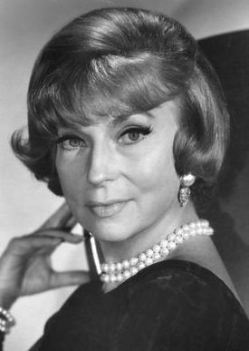
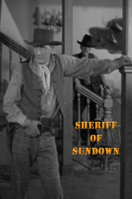
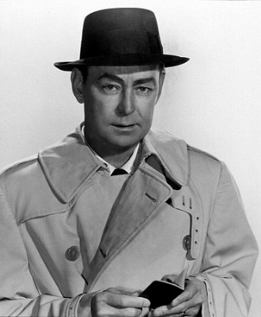

#2621 Citizen Kane
Auszeichnungen: 1 Oscars gewonnen für 8 Oscars nominiert


 IMDB-Wertung: 8.4 / 10
IMDB-Wertung: 8.4 / 10  IMDB-TOP-Platzierung: 74
IMDB-TOP-Platzierung: 74  Metascore: 100
Metascore: 100 
»Rosebud« - das ist das letzte Wort, das Charles Foster Kane (Orson Welles) im Sterbebett auf seinem Schloss Xanadu haucht. "Citizen Kane" schildert die Geschichte des Zeitungsmagnaten, der die öffentliche Meinung Amerikas über Jahrzehnte beherrschte. Sein geschäftliches Leben begann mit viel Enthusiasmus und dem Bekenntnis zur Wahrheit und Unbestechlichkeit. Dann kam der Erfolg, mit ihm Ehrgeiz und schließlich, als er diesen nicht befriedigt sah, die Loslösung von seinen Prinzipien hin zur Korruption durch Macht. Der Reporter Jerry Thompson (William Alland) versucht, mehr über diesen geheimnisvollen Mann zu erfahren...
Jahr: 1941
Dauer: 119 Minuten
FSK: 12
Land: USA Studio: RKO Radio Pictures, Inc.Tonspuren:
Untertitel: Deutsch,
Auflösung: 1080p (1440x1080) Größe: 8140 MB
Genre: Drama, Mystery
Regisseur:  Orson Welles
Orson Welles
Drehbuch: Herman J. Mankiewicz, Orson Welles, John Houseman, Roger Q. Denny, Mollie Kent
Soundtrack: Bernard Herrmann
Darsteller:
 Joseph Cotten als Jedediah Leland
Joseph Cotten als Jedediah Leland- Dorothy Comingore als Susan Alexander Kane
-  Agnes Moorehead als Mary Kane
- Ruth Warrick als Emily Monroe Norton Kane
- Ray Collins als James W. Gettys
- Everett Sloane als Mr. Bernstein
 Paul Stewart als Raymond
Paul Stewart als Raymond Orson Welles als Kane
Orson Welles als Kane- Nat 'King' Cole als Pianist in 'El Rancho' , uncredited
 Gino Corrado als Gino , uncredited
Gino Corrado als Gino , uncredited- Maurice Costello als Extra , uncredited
- John Dilson als Ward Heeler , uncredited
-  Bud Geary als Newspaperman at Trenton Town Hall , uncredited
- Peter Gowland als Guest , uncredited
-  Alan Ladd als Reporter Smoking Pipe at End , uncredited
- Frank McClure als (uncredited
 Arthur O'Connell als Reporter , uncredited
Arthur O'Connell als Reporter , uncredited- Gregg Toland als Interviewer in 1935 Newsreel , uncredited
- Jan Wiley als Reporter at Xanadu , uncredited
- Erskine Sanford als Herbert Carter
- William Alland als Jerry Thompson
 George Coulouris als Walter Parks Thatcher
George Coulouris als Walter Parks Thatcher- Fortunio Bonanova als Matiste
- Gus Schilling als The Headwaiter
 Philip Van Zandt als Mr. Rawlston
Philip Van Zandt als Mr. Rawlston- Georgia Backus als Miss Anderson
 Harry Shannon als Kane's Father
Harry Shannon als Kane's Father- Sonny Bupp als Kane III
- Buddy Swan als Kane, age eight
- Don Ackerman als Man at Party in Everglades , uncredited
- Loretta Agar als Dancing Girl , uncredited
- Demetrius Alexis als Newsreel Man , uncredited
- Peter Allen als Man in Senate Investigating Committee , uncredited
- William Alston als Man at Xanadu Great Hall , uncredited
- Baudelio Alva als Newsreel Man , uncredited
- T. Lockwood Arbright als Newsreel Man , uncredited
 Sam Ash als Man at Boat Dock , uncredited
Sam Ash als Man at Boat Dock , uncredited- Michael Audley als Man in Projection Room , uncredited
- Walter Bacon als City Room Employee , uncredited
- Harry A. Bailey als Man Singing at Inquirer Party , uncredited
- Alva Baudena als Man in Newsreel , uncredited
- Charles Bennett als Entertainer , uncredited
 Joan Blair als Georgia , uncredited
Joan Blair als Georgia , uncredited- Danny Borzage als Man Singing at Inquirer Party , uncredited
- Robert Brent als Man Singing at Inquirer Party , uncredited
- James Brought als Man in Newsreel , uncredited
- Morgan Brown als Servant , uncredited
- Harry Burkhardt als Wedding Guest , uncredited
- William Calkins als Man Singing at Inquirer Party , uncredited
- Porter Chase als Man Singing at Inquirer Party , uncredited
Datei: X:\1900-1949\Citizen Kane (1941, FSK12, 1440x1080).mkv seit 26.11.2015
Festplatte: HD 1900-1970
 Es gibt insgesamt 80 Filme in der Gruppe '1900-1949'
Es gibt insgesamt 80 Filme in der Gruppe '1900-1949'